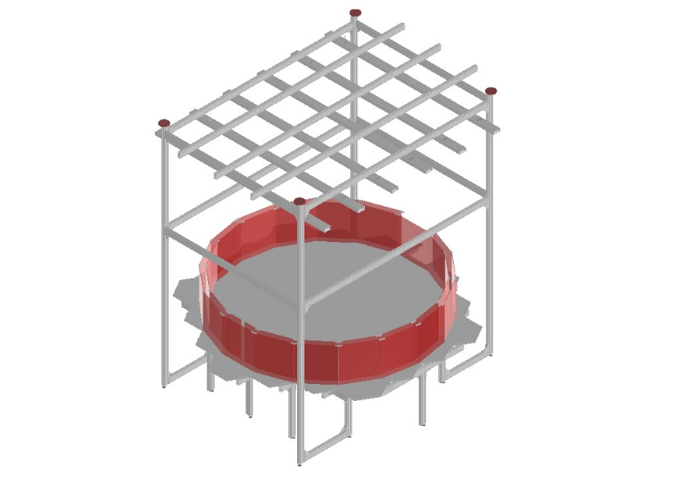

Habitat#
The Aeon habitat consists of a modular floor made of matte white acrylic hexagonal tiles supported by a metal framework. Each tile fits into a hexagonal slot within an underlying acrylic honeycomb grid, which is designed to accommodate various Aeon hexagonal functional modules like the nest and foraging patch. The habitat is enclosed by several wall modules (tile with a pair of red tinted acrylic walls) that are connected to create a corridor. The corridor allows for direct access to the nest and to the centre of the habitat through openings in some of the walls.
The rich and ethologically relevant behavioural displays can be monitored using Infrared lighting and cameras anchored to the metal framework around and above the habitat.
Parts list#
Assembly guide#
Base framework#
Steps 1-3
1. Connecting aluminium basic components that constitute the building blocks of the habitat structure.#
2. Place the aluminium extrusions as displayed and connect them with equally spaced shorter extrusions (ID 5,8) to create the habitat floor (see step 1).#
3. To create a thread for the adjustable feet, tap one end of each of the legs (ID 3) and screw the feet into it. Connect the legs to the habitat floor using angle brackets in the locations shown in red. Note: if needed, the adjustable feet allow for levelling of the floor.#
Modular floor#
Steps 4-7
4. Connecting and assembly of the acrylic honeycomb that will support the hexagonal floor tiles.#

5. Acrylic honeycomb assembly.#
6. Some of the tiles have slots to accommodate the walls of the habitat. The walls are supported by two acrylic wall holders that are attached to the underside of each tile with chloroform. The nest tile is only equipped with 2 smaller wall holders (dotted red lines). Note: make a 1.25mm thick and 18mm wide rim all around the bottom of the tiles using a milling machine. This allows them to slot into the honeycomb.#
7. Add the hexagonal floor tiles to the habitat as shown. Tiles A, B and C have a cut out that will accommodate the walls to create a corridor.#
Modular walls#
Steps 8-10
8. Insertion of the walls. The inner walls are narrower compared to the outer walls.#
9. Place inner and outer walls around the habitat. Note: the inner wall with a slot across the middle allows access to the habitat from the nest via the corridor. The nest tile has only an inner wall as the outer one is part of the nest assembly.#
10. Attach the snap-on 3D printed wall joint to stabilise the inner and outer walls.#
Support framework#
Steps 11-13

11. Tap both ends of 4 aluminium extrusions (ID 10) that will provide support and stability to the structure. Insert one adjustable foot at each end and connect the extrusion (ID 7) to the main habitat structure with angle brackets as shown. Note: these feet can then be adjusted to apply pressure and stabilise the habitat. We attached 10mm disks to each adjustable foot to distribute the force applied and avoid damaging the ceiling.#
12. Add 8 support lateral aluminium extrusions (ID 2,9) to provide lateral stability.#
13. Add 3 aluminium extrusions (ID 1) on top of the habitat. This will be used to anchor the top cameras.#
Infrared illumination#
Steps 14-19
14. Assemble the Infrared LEDs extrusions (1m) by first applying a layer of heat resistant silicone onto the base of the extrusions.#
15. Press 3 IR LEDs strips into the silicon. Note: take care to remove any excess silicon from connection points or the LEDs themselves.#
16. Cover the LEDs with a diffusive panel.#
17. Connect two LEDs extrusions with a metal plate and solder the strips. Equip the LEDs extrusion with cable attachment plate, and connect the adjustable suspension cables, two per plate.#
18. Suspend 6 LEDs assemblies from the top most lateral support aluminium extrusions. Note: use the adjustable suspension cable to vary the height and the angle of the LEDs as needed.#
19. Habitat fully assembled to be flexibly equipped with a variety of different hardware depending on experimental requirements.#